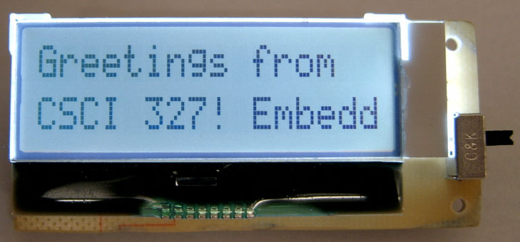

C / Embedded Systems
These are just a couple of projects I have finished, I am always tinkering with microcontrollers and seeing what I can create with various sensors, motors, and communications. I also tinker with Linux seeing what I can do; currently working with TinyCore on both x86 based netbook and Rasberry Pi.
Bluetooth Low Energy RC Car
.jpg)
Main Components
- Microchip RN4020 BTLE Module |
- TI MSP430G2553 MCU |
- 2x TI DRV8833 H-Bridge Drivers |
- 6v to 3.3v Step-down converter
Protocols Used
- UART between MSP430 and RN4020 |
- PWM between MSP430 and H-Bridge Drivers |
- Bluetooth Low Energy between Galaxy S5 and RN4020
Overview
This project used a Samsung Galaxy S5 Sport with an Android application utilizing the accelerometer sensor as the controller.
The Android device connected with the RN4020 over Bluetooth Low Energy and sent commands over BTLE where the RN4020 would forward the commands to the MSP430 via UART at 9600 baud rate.
The MSP430 would provide logic based on the commands received and appropriately control the PWM signal send to the drivers based on what information was recieved.
The MSP430 also contained logic to stop the car if communication was lost for whatever reason.
Scrolling Display
Main Components
- Newhaven 2x16 LCD Display Module |
- Renesas RL-78 MCU |
- Cypress 64Kbit F-RAM Module |
- Silicon Labs CP2104 USB-to-UART Bridge
Protocols Used
- UART between CP2104 and RL78 |
- I2C between RL78 and LCD Display |
- I2C between RL78 and F-RAM Module
Overview
This project was completed as part of a class on embedded systems. The RL78 is programmed entirely in Assembly using IAR Embedded Workbench IDE.
The system is powered from a single AAA battery and has an external power switch for on/off operation.
The device is a simple scrolling display which reads from the internal 64Kbit F-RAM module. The device continually cycles the stored text.
The device attaches to a host machine via a USB cord, where a terminal application can deliver text to the device.
During a 'load' operation via a terminal application, the USB-to-UART bridge forwards typed characters to the RL78 which then takes those characters and writes them to the F-RAM module for future use.
'Phone Mouse'
Main Components
- Linux 'uevent' system file |
- Local Network Connection |
- Android Application
Protocols Used
- Linux kernel logic with C and 'uevent' file |
- UDP stream from Android to Linux machine |
- Touch events within Android
Overview
This project allows an Android device to act as the mouse and keyboard input for a Linux machine by utilizing the 'uevent' system file within Linux.
The project creates a UDP stream across the local network between the Android device and the Linux machine. The Android device will scan the local network
for available IP addresses and displays a list to the user, where they can choose the appropriate machine. The connection is performed with UDP to allow for a
streaming connection, avoiding packet construction and associated overhead. The Android application captures touch events and uses a text input box for keyboard
events which allows the user to view input on the Android device.